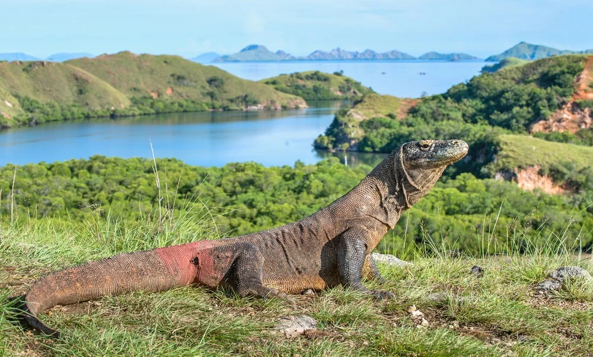

Our Gallery



Labuan Bajo adalah sebuah kota kecil yang terletak di ujung barat Pulau Flores, Indonesia. Dikenal sebagai pintu gerbang menuju Taman Nasional Komodo, Labuan Bajo menawarkan pemandangan alam yang menakjubkan, termasuk pulau-pulau yang indah dan pantai-pantai yang memukau.
Kota ini memiliki suasana yang santai, dengan pelabuhan yang ramai dan beragam restoran serta kafe yang menyajikan makanan lokal dan seafood segar.
Labuan Bajo juga populer di kalangan penggemar snorkeling dan diving, dengan terumbu karang yang indah dan kehidupan bawah laut yang beragam. Sementara sunset yang memukau di lokasi-lokasi strategis membuatnya menjadi tempat yang sempurna untuk beristirahat dan menikmati keindahan alam.

Traveller
★★★★★
Saya menikmati wisata di labuan bajo karena ada trek pendakian yang sangat menantang dan kulinernya yang sangat enak.
Traveller
★★★★★
Di labuan bajo saya bisa meilihat komodo yang berkeliaran di pulau dan desa melo yang bisa dibuat spotfoto yang bagus.
Player Esport
★★★★★
Saat saya mengunjungi tempat ini saya terkejut karena pemandangan yang indah dan banyak tempat wisata yang bisa dinikmati.
Dosen
★★★★★
Saya ingin menjadikan labuan bajo sebagai tempat untuk materi mengajar saya dikarenakan tempat yang sangat bagus.
Artis
★★★★★
Saya suka labuan bajo karena disana ada tempat wisata snorkeling yang menjadi favorit saya.
Model
★★★★★
Tempat ini sangat bagus digunakan sebagai spotfoto dan saya telah melakukan foto model disana.